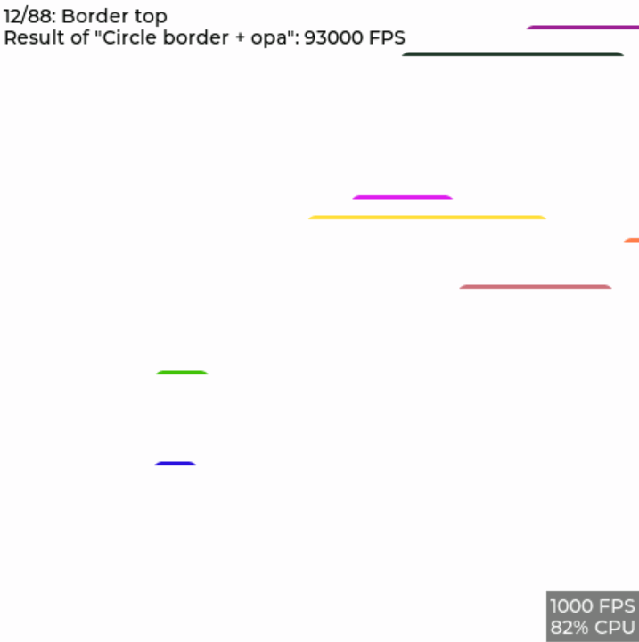
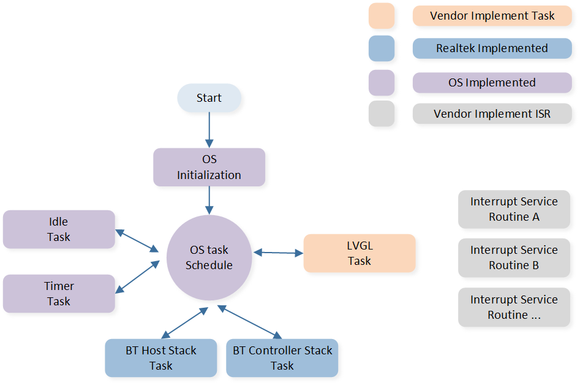
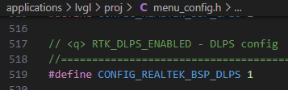

LVGL
LVGL（Light and Versatile Graphics Library）是一个开源的嵌入式图形库，用于创建漂亮、高性能且可定制的图形用户界面（GUI）。它设计简单、灵活，适用于各种嵌入式平台，包括微控制器和单片机。
概述
本文介绍了基于 Realtek RTL8772GWP 的 LVGL 方案相关信息，旨在帮助用户搭建开发环境，包括了解 SDK、编译和烧录固件及系统测试方法等。开发者可烧录 SDK 中的测试文件，确保开发环境配置得当、EVB 可以正常工作。
备注
本文所述示例方案采用 Realtek RTL8772GWP EVB，搭配 st7701s 驱动的 RGB(480 * 480) LCD 显示、gt911 驱动的触控屏模组，开发者若选用本文相同的硬件环境，可直接运行 SDK 中的样例工程。
如需适配其他型号的显示屏和输入设备，请参考 GUI 任务 小节 ，适配到新的显示和输入设备。
Realtek RTL8772GWP 芯片支持的显示接口：i8080、qspi/spi、RGB888/RGB565。
实用案例
下图显示了 LVGL 应用包含的模块：

LVGL 系统模块组成
支持功能
Realtek LVGL 应用程序提供完备功能支持:
支持 LVGL
支持蓝牙 BLE OTA
环境需求
RTL87x2GWP EVB
LCD 屏幕模块 (480*480 st7701s + gt911)
ARM Keil MDK: ArmMDK
MPTool_kits: RealMCU-Tool
DebugAnalyzer: RealMCU-Tool
scons 4.4.0: python 环境运行 pip install scons==4.4.0
硬件连线
EVB
EVB 提供了用户开发和应用调试的硬件环境。LVGL 应用使用 Model B EVB 进行演示，EVB 由母板和子板组成。EVB 具有下载模式和工作模式，下载模式用于烧录固件等功能，工作模式为正常运行应用程序模式，开发者需要配置 EVB 以进入所需的模式。有关 EVB 母板的详细介绍和使用方法请参阅 评估板指南。

LVGL EVB 接线
配置选项
SDK 中 LVGL 方案的配置在 SDK\applications\lvgl\proj\menu_config.h 中，可在 Keil 使用 Configuration Wizard 配置，默认 BLE 配置如下：
#if (CONFIG_REALTEK_BLE_SERVICE == 1)
// <q> DFU_SERVICE
#define CONFIG_REALTEK_DFU_SERVICE 1
#endif
#if (CONFIG_REALTEK_BLE_SERVICE == 1)
// <q> OTA_SERVICE
#define CONFIG_REALTEK_OTA_SERVICE 1
#endif
// <e> BLE_OTA_ENABLED
#define CONFIG_REALTEK_BLE_OTA 1
#if (CONFIG_REALTEK_BLE_OTA == 1)
// <q> SILENT_OTA
// <i> Transmit images while application running
#define CONFIG_REALTEK_SILENT_OTA 1
// <q> NORMAL_OTA
// <i> Enter dfu mode to transmit images
#define CONFIG_REALTEK_NORMAL_OTA 1
#endif
// </e>
// <e> BLE_DEMO_APP
#define CONFIG_REALTEK_BLE_DEMO 1
#if (CONFIG_REALTEK_BLE_DEMO == 1)
// <o> BLE_DEMO_APP
// <0=> BLE_OTA_DEMO
// <1=> BLE_PERIPHERAL_DEMO
#define CONFIG_REALTEK_BLE_DEMO_APP 0 // select ble demo app
#if (CONFIG_REALTEK_BLE_DEMO_APP == 0)
#define CONFIG_REALTEK_BLE_OTA_DEMO
#elif (CONFIG_REALTEK_BLE_DEMO_APP == 1)
#define CONFIG_REALTEK_BLE_PERIPHERAL_DEMO
#endif
#endif
// </e>
备注
当配置修改后，根据所支持的编译方式重新构建工程后配置生效，构建方法请参考 编译和下载 步骤。
CONFIG_REALTEK_BLE_DEMO,CONFIG_REALTEK_BLE_DEMO_APP：配置是否启用 ble demo app，及选择 demo。CONFIG_REALTEK_BLE_OTA,CONFIG_REALTEK_DFU_SERVICE,CONFIG_REALTEK_OTA_SERVICE：ble OTA demo app 的底层支持，需与 OTA demo 一同启用，否则关闭配置。
编译和下载
请参阅 快速入门 进行编译和下载。值得注意的是：
- 生成 Flash Map 步骤：开发者需要根据
SDK\applications\lvgl\proj\flash_map.h生成flash_map.ini。 - 务必使能 psram power，其他功能可根据需要进行配置。

System Config 使能 Psram Power
构建 Keil MDK 工程，编译 APP Image 步骤：
LVGL SDK 工程路径为：
SDK\applications\lvgl\projKeil MDK 工程路径为：
SDK\applications\lvgl\proj\mdk当修改了工程的配置后，需要重新构建工程配置方可生效，构建后将会按配置生成全新工程文件，覆盖原有的工程文件。若开发者有手动在原工程中添加的文件或配置，将会在构建后失效不会保留到新的工程。
构建工程时，在工程路径下打开 cmd 窗口。
运行命令 scons --target=mdk5 构建 mdk 工程，打开 mdk 工程进行编译，APP image 将生成在以下路径中：
SDK\applications\lvgl\proj\mdk\bin。SDK\applications\lvgl\proj> scons --target=mdk5 scons: Reading SConscript files ... ... CC xxxx.o CC xxxx.o ... LINK app.elf fromelf --bin app.elf --output rtthread.bin fromelf -z app.elf scons: done building targets.
打开生成的 Keil MDK 工程，点击编译生成 app image，具体请参阅 编译 APP Image 。
下载烧录方法请参阅 文件下载 。
生成和下载 User Data：
LVGL 工程 User Data 打包路径：
SDK\subsys\gui\gui_engine\example\screen_lvgl工程用到的外部文件需要打包作为 User Data 下载，打开工程 User Data 打包路径，将需要打包的文件放置于
root\文件夹下，双击脚本mkromfs_0x4600000.bat生成 User Data 文件root(0x4600000).bin和资源映射地址resource.h。请使用 MP Tool 的 User Data 功能下载
root(0x4600000).bin，写入地址：0x04600000
测试验证
UI 测试流程
正确完成烧录固件后，令 EVB 切换到工作模式，复位重启。
设备重启后可以看到 LVGL 的 benchmark demo 运行，屏幕的左上角显示当前测试用例和测试进度，屏幕的右下角显示当前帧率和 CUP 占用率。
在完成所有测试用例前，不会有 log 输出，无触屏交互响应，完成所有测试用例后，测试结果将以 log 和表格的方式显示，可以触屏滑动浏览。
{kind=link}

LVGL UI PC 模拟器演示
软件设计介绍
本章主要介绍 RTL8772GWP LVGL 解决方案的软件相关技术参数和行为规范，为 LVGL 的功能提供软件概述。
源代码目录
工程文件目录：
sdk\application\lvgl\proj源代码目录：
sdk\application\lvgl\src
LVGL SDK中的源文件目前分为以下几类：
└── Project: lvgl
└── app includes the LVGL user application implementation
├── menu_config.h project construct configurations
├── main.c
└── lvgl_init.c includes task and hardware init
├── lib
├── device
├── peripheral includes all peripheral drivers and module code used by the application
├── profile includes BLE profiles or services
├── dfu
├── dfu_task
├── LVGL includes all LVGL source
├── lcd_low_driver includes display pannel IC driver implementation
├── touch_driver includes touch IC driver implementation
├── hal_drivers
├── database
├── fs include file system implementation
├── port_lvgl
├── gui_dlps.c includes gui dlps configurations
├── lv.conf.h includes LVGL configurations
├── lv_port_disp.c includes LVGL display interface
├── lv_port_indev.c includes LVGL input device interface
├── lvgl_demo.c includes LVGL demo, benchmark demo
└── lv_port_fs.c includes LVGL filesystem interface
└── lvgl_assets includes user image and font C files
├── img_demo_lvgl_logo.c lvgl logo image array
├── lv_font_harmony_32.c harmony font array
└── lvgl_example_assets.c example shows how to set image and font source
:
└── ble_ota_app includes ble ota demo implementation
:
└── ble_app includes ble simple peripheral demo implementation
Flash布局
应用程序默认的 flash 布局头文件： sdk\application\lvgl\proj\flash_map.h
Example layout with a total flash size of 16 MB |
Size(byte) |
Start Address |
|---|---|---|
Reserved |
4K |
0x04000000 |
OEM Header |
4K |
0x04001000 |
Bank0 Boot Patch |
32K |
0x04002000 |
Bank1 Boot Patch |
32K |
0x0400A000 |
OTA Bank0 |
2456K |
0x04012000 |
|
4K |
0x04012000 |
|
32K |
0x04013000 |
|
60K |
0x0401B000 |
|
212K |
0x0402A000 |
|
2148K |
0x0405F000 |
|
0K |
0x04278000 |
|
0K |
0x04278000 |
|
0K |
0x04278000 |
|
0K |
0x04278000 |
|
0K |
0x04278000 |
|
0K |
0x04278000 |
|
0K |
0x04278000 |
OTA Bank1 |
0K |
0x04278000 |
Bank0 Secure APP code |
16K |
0x04278000 |
Bank0 Secure APP Data |
0K |
0x040AC000 |
Bank1 Secure APP code |
0K |
0x0427C000 |
Bank1 Secure APP Data |
0K |
0x0427C000 |
OTA Temp |
2148K |
0x0427C000 |
FTL |
16K |
0x04495000 |
APP Defined Section1 |
0K |
0x04499000 |
APP Defined Section2 |
0K |
0x04499000 |
重要
如需调整Flash布局，请参考 快速入门 中 生成 Flash Map 的步骤。
调整Flash布局后，必须使用新的
flash_map.ini重新进行 生成 OTA Header 和 生成 System Config File 步骤。
软件架构
系统软件架构如下图所示：

系统软件架构
Platform feature：包括 OTA、Flash、FTL 等。
Peripheral driver：提供对 RTL87x2G 外设接口的应用层访问。
OSIF：实时操作系统的抽象层。
GAP：用户应用程序与 BLE 协议栈通信的抽象层。
Application：应用层包含用户定义的各个应用任务。
任务和优先级
如下图所示，用户应用程序共创建了 5 个任务：
{kind=link}

任务和优先级
各任务描述及优先级如下表：
任务 |
描述 |
优先级 |
|---|---|---|
Timer |
实现 FreeRTOS 所需的软件定时器 |
6 |
BT Controller stack |
实现 HCI 以下的BLE协议栈 |
6 |
BT Host stack |
实现 HCI 以上的BLE协议栈 |
5 |
LVGL |
处理 UI 显示及交互 |
1 |
Idle |
运行后台任务 |
0 |
备注
开发者可创建多个应用任务，并相应地分配内存资源。
GUI 任务
在本示例工程中 GUI 默认任务为 LVGL benchmark demo 工程，测试并展示了 LVGL 在该平台上各个场景下的性能表现，包括帧率和 CUP 负载水平。
UI
LVGL 主要的配置项目都在 sdk\application\lvgl\src\lvgl_port\lv_conf.h 中进行配置，包括显示设备尺寸和颜色深度、堆栈接口配置等，开发者可以根据需求进行定制。
关于 LVGL UI 的设计开发指南请参阅 使用 LVGL 设计应用程序 及 LVGL 在线文档 LVGL Documentation。 文档 使用 LVGL 设计应用程序 中对 PC 模拟器的使用、实机移植方法、benchmark 性能、UI 资源转换、LVGL 基本开发方法等做了详细介绍，文档 LVGL Documentation 为 LVGL 的开发文档，其中详细介绍了 LVGL 的功能与特性等，并配以丰富的示例。
DLPS
DLPS 为系统休眠模式，具有较低的功耗，以及较快的进出时间，同时 RAM 内容保持。系统如何进出 DLPS 及其具体行为，请参阅 低功耗模式。 PSRAM 的默认配置在进入 DLPS 后会掉电，所有数据丢失，需要改变掉电设置请参阅 PSRAM。
在本示例工程中，如需配置打开 DLPS 功能：
在文件
menu_config.h中使能 HAL 支持，修改后重新构建工程，构建方法请参考 编译和下载 小节：
{kind=link}

LVGL DLPS HAL 使能开关
在文件
sdk\application\lvgl\proj\board.h中配置使能宏：

LVGL DLPS 使能开关
在本示例工程中，使能 DLPS 功能后，系统以显示激活时间是否超时作为休眠许可，当屏幕在一段时间内（如 5 秒）没有触屏事件发生，则停止刷屏，屏幕熄灭，系统进入休眠。系统在休眠时，若有新的触屏事件发生，则系统唤醒，点亮屏幕，程序继续运行，并进入新的休眠倒计时。具体的，进入休眠前系统将配置触屏 IC 的 INT 引脚作为唤醒源，当发生触屏事件时，触屏 IC 在 INT 引脚上将产生电平变化，从而唤醒 host，即 PAD 唤醒。
若使能了蓝牙功能，则蓝牙将会在休眠期间定期唤醒系统进行广播，但不会唤醒 GUI 任务。蓝牙任务的唤醒行为可由开发者按需开发（如是否需要通过蓝牙唤醒所有任务）。进出休眠时需要配置硬件和软件状态，均在定义在文件 sdk\application\lvgl\src\dlps\gui_dlps.c 中。
- 注意：
请勿在
gui_dlps.c中的函数bool gui_dlps_enter(void)()中执行长时间耗时动作，如 delay 等待
static void gui_hook_af(void)
{
/*Add your hook function here*/
#if (DLPS_EN == 1)
// Demo dlps
/*Normal operation (no sleep) in < xx sec inactivity*/
if (lv_disp_get_inactive_time(NULL) < 5000)
{
gui_dlps_set(false);
}
/*Sleep after xx sec inactivity*/
else
{
// check other task state
// wait transform done here
gui_dlps_set(true);
}
#endif
}
static void lvgl_demo_run(void *p)
{
...
gui_dlps_init();
...
while (1)
{
if (gui_dlps_check() == false)
{
/* hook function before lvgl event */
gui_hook_bf();
lv_task_handler();
/* hook function after lvgl event */
gui_hook_af();
// os_delay(5);
}
else
{
// DBG_DIRECT("stop timer");
/*Stop timer and suspend gui task*/
os_timer_stop(&gui_timer0);
os_task_suspend(lvgl_task_handle);
}
}
}
BLE 任务
BLE_OTA_DEMO 请参阅 OTA
BLE_PERIPHERAL_DEMO 请参阅 LE Peripheral